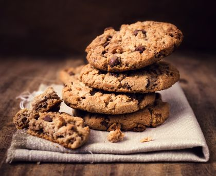

Ingrédients
- 85 g de beurre mou
- 1 oeuf
- 85 g de sucre
- Vanille ou 1 sachet de sucre vanillé
- 150 g de farine
- 100g de chocolat noir
- 1 cueillère à café de levur echimique
Cookies
- Etape 1:
Détailler le chocolat en pépites.
- Etape 2:
Préchauffer le four à 180°C (thermostat 6).
Dans un saladier, mettre 75 g de beurre, le sucre, l'oeuf entier, la vanille et mélanger le tout.
- Etape 3:
Ajouter petit à petit la farine mélangée à la levure, le sel et le chocolat.
- Etape 4:
Beurrer une plaque allant au four et former les cookies sur la plaque.
- Etape 5:
Pour former les cookies, utiliser 2 cuillères à soupe et faire des petits tas espacés les uns des autres; ils grandiront à la cuisson.
- Etape 6:
Enfourner pour 10 minutes de cuisson.